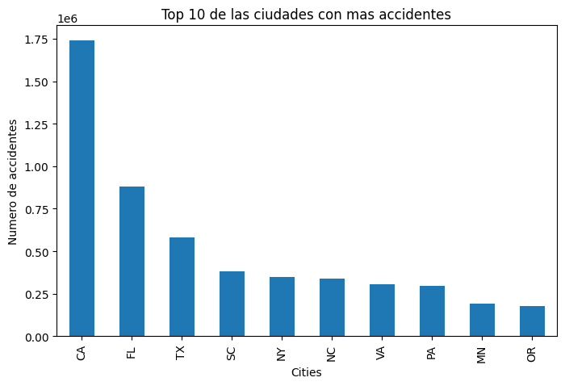
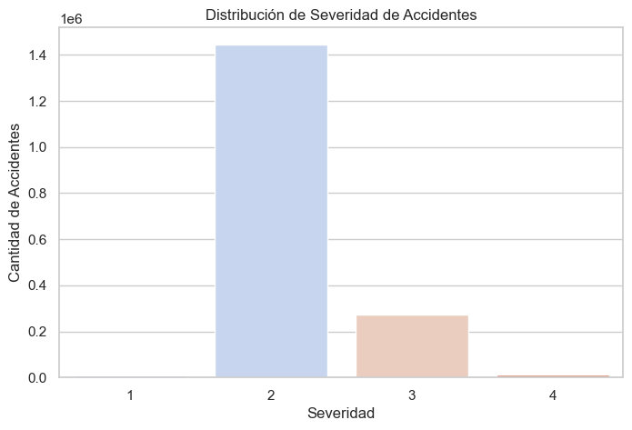
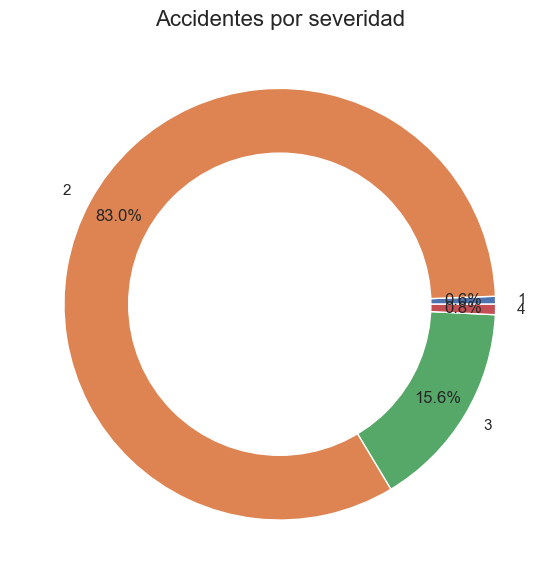
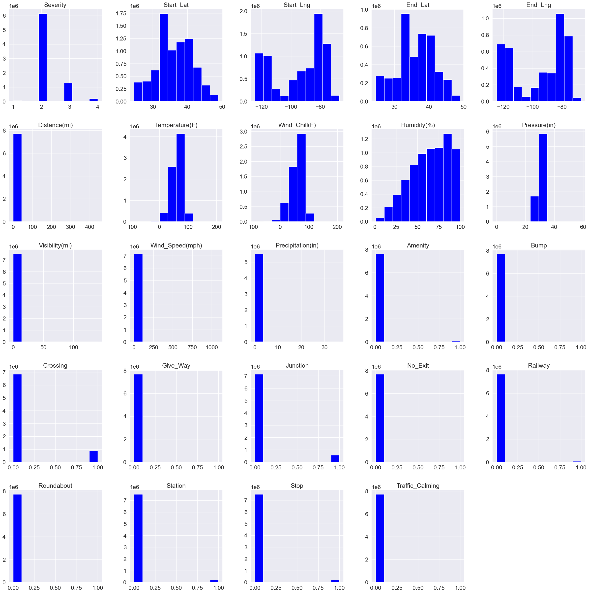
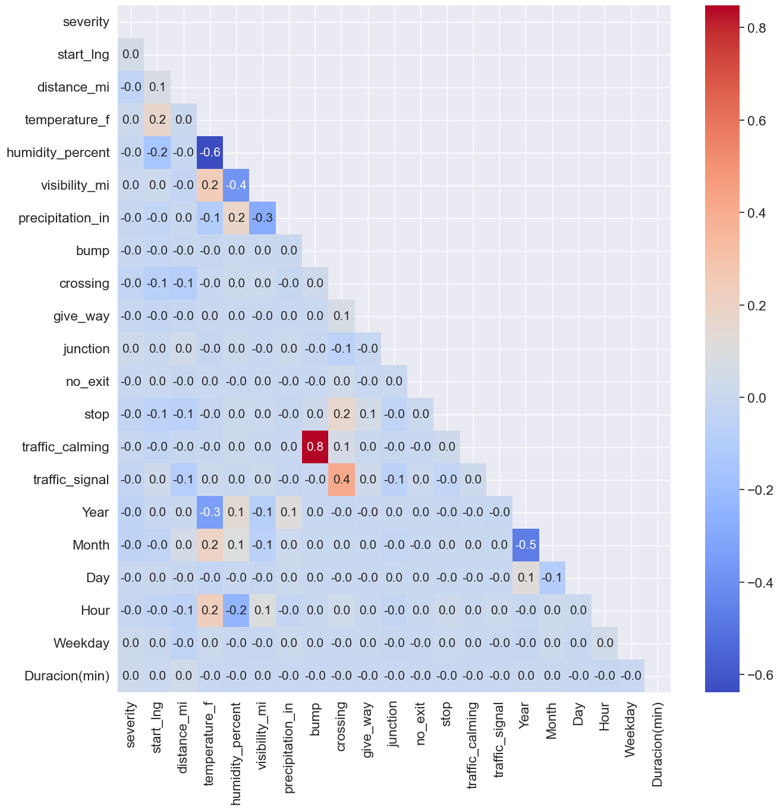
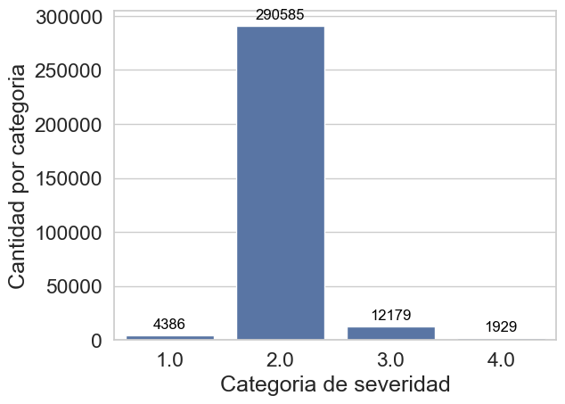
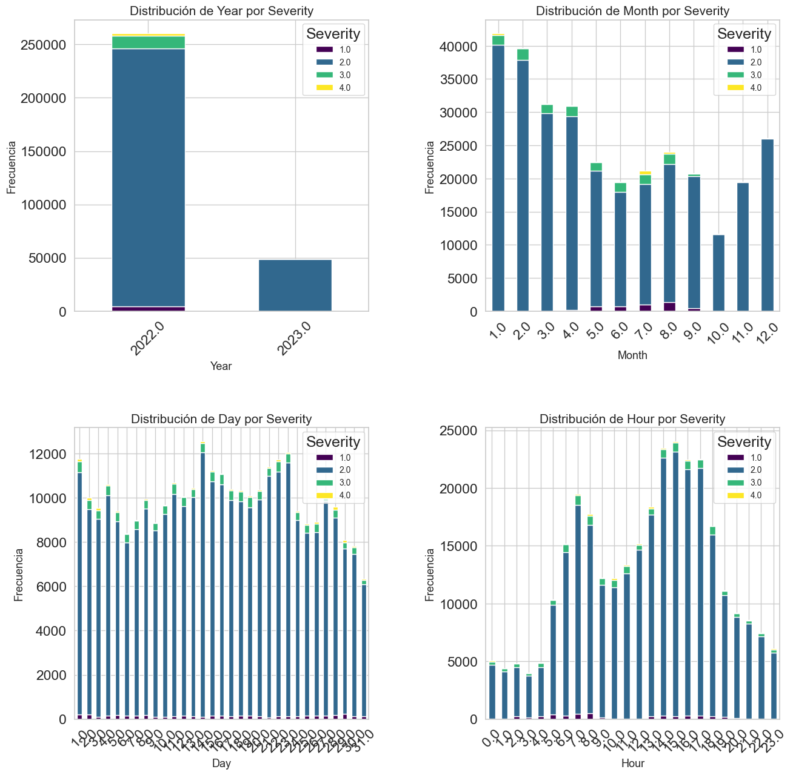

Predicción de Accidentes de Tráfico en Estados Unidos Utilizando un Enfoque de Voting Classifier con Machine Learning.#
Resumen#
Este proyecto busca desarrollar un modelo de predicción de accidentes de tráfico en Estados Unidos utilizando técnicas avanzadas de Machine Learning. A través de la integración de varios modelos predictivos mediante un Voting Classifier, se pretende mejorar la precisión y robustez del sistema predictivo en comparación con modelos individuales. La metodología empleada combina el preprocesamiento de datos, la selección de características, el equilibrio de clases, grid search, cross validation y validación del modelo resultante haciendo uso de pipelines.
Metodología#
Población:#
La población de interés para este estudio comprende todos los accidentes vehiculares que se han registrado en los Estados Unidos desde el inicio del año 2016 hasta la fecha más reciente disponible en nuestro conjunto de datos.
Muestra:#
Para los propósitos de este estudio, hemos restringido nuestro análisis a una muestra específica. Esta muestra consiste en accidentes vehiculares que se han registrado en el estado de California a partir del año 2022.
Diccionario de variables#
ID: Identificador único de incidente
Source: Fuente de la información
Severity: Muestra la severidad del accidente, siendo 1 el menor impacto y 4 el mayor.
Start time y End Time: Tiempo de inicio y finalización del accidente.
Start Lat, Start Lng, End Lat y End Lng: Latitudes y longitudes iniciales y finales.
Distance: La longitud de la carretera recorrida en el incidente.
Description: Descripción del accidente
Street: Nombre de la calle del accidente.
City, County, State, Country: Ciudad, Condado, Estado y País.
Zipcode: Código postal de la ubicación del accidente.
Timezone: Zona de tiempo basado en la localización del accidente.
Airport_Code: Código del aeropuerto.
Weather_Timestamp: Marca de tiempo del registro de observación meteorológica
Wind_Chill (F), Temperature (F), Humidity (%), Pressure (in), Wind direction (mph), Precipitation (in), Weather condition: Condiciones del ambiente de viento frío, humedad, presión, dirección del viento, precipitación.
Visibility (mi): Visibilidad en millas.
Amenity, Bump, Crossing, Give_way, Junction, No Exit, Roundabout, Station, Stop, Traffic Calming, Traffic_Signal, Turning_Loop:
Indica la presencia de una amenidad, baches, cruce, ceda el paso, unión, no salida, rotonda, estación, pare, pacificación del tráfico, señal de tráfico, bucle giratorio.
import pandas as pd
import numpy as np
import klib
import seaborn as sns
import matplotlib.pyplot as plt
import warnings
warnings.filterwarnings("ignore")
path = r"C:\Users\jose_\OneDrive\Documentos guardados\Maestria analisis de datos\Machine Learning Likni\Machine learning Likir\Informe_Machine_Learning\US_Accidents_March23.csv"
df =pd.read_csv(path)
---------------------------------------------------------------------------
KeyboardInterrupt Traceback (most recent call last)
Cell In[3], line 2
1 path = r"C:\Users\jose_\OneDrive\Documentos guardados\Maestria analisis de datos\Machine Learning Likni\Machine learning Likir\Informe_Machine_Learning\US_Accidents_March23.csv"
----> 2 df =pd.read_csv(path)
File c:\Users\jose_\anaconda3\envs\ml_venl\lib\site-packages\pandas\io\parsers\readers.py:1026, in read_csv(filepath_or_buffer, sep, delimiter, header, names, index_col, usecols, dtype, engine, converters, true_values, false_values, skipinitialspace, skiprows, skipfooter, nrows, na_values, keep_default_na, na_filter, verbose, skip_blank_lines, parse_dates, infer_datetime_format, keep_date_col, date_parser, date_format, dayfirst, cache_dates, iterator, chunksize, compression, thousands, decimal, lineterminator, quotechar, quoting, doublequote, escapechar, comment, encoding, encoding_errors, dialect, on_bad_lines, delim_whitespace, low_memory, memory_map, float_precision, storage_options, dtype_backend)
1013 kwds_defaults = _refine_defaults_read(
1014 dialect,
1015 delimiter,
(...)
1022 dtype_backend=dtype_backend,
1023 )
1024 kwds.update(kwds_defaults)
-> 1026 return _read(filepath_or_buffer, kwds)
File c:\Users\jose_\anaconda3\envs\ml_venl\lib\site-packages\pandas\io\parsers\readers.py:626, in _read(filepath_or_buffer, kwds)
623 return parser
625 with parser:
--> 626 return parser.read(nrows)
File c:\Users\jose_\anaconda3\envs\ml_venl\lib\site-packages\pandas\io\parsers\readers.py:1968, in TextFileReader.read(self, nrows)
1965 else:
1966 new_col_dict = col_dict
-> 1968 df = DataFrame(
1969 new_col_dict,
1970 columns=columns,
1971 index=index,
1972 copy=not using_copy_on_write(),
1973 )
1975 self._currow += new_rows
1976 return df
File c:\Users\jose_\anaconda3\envs\ml_venl\lib\site-packages\pandas\core\frame.py:778, in DataFrame.__init__(self, data, index, columns, dtype, copy)
772 mgr = self._init_mgr(
773 data, axes={"index": index, "columns": columns}, dtype=dtype, copy=copy
774 )
776 elif isinstance(data, dict):
777 # GH#38939 de facto copy defaults to False only in non-dict cases
--> 778 mgr = dict_to_mgr(data, index, columns, dtype=dtype, copy=copy, typ=manager)
779 elif isinstance(data, ma.MaskedArray):
780 from numpy.ma import mrecords
File c:\Users\jose_\anaconda3\envs\ml_venl\lib\site-packages\pandas\core\internals\construction.py:503, in dict_to_mgr(data, index, columns, dtype, typ, copy)
499 else:
500 # dtype check to exclude e.g. range objects, scalars
501 arrays = [x.copy() if hasattr(x, "dtype") else x for x in arrays]
--> 503 return arrays_to_mgr(arrays, columns, index, dtype=dtype, typ=typ, consolidate=copy)
File c:\Users\jose_\anaconda3\envs\ml_venl\lib\site-packages\pandas\core\internals\construction.py:152, in arrays_to_mgr(arrays, columns, index, dtype, verify_integrity, typ, consolidate)
149 axes = [columns, index]
151 if typ == "block":
--> 152 return create_block_manager_from_column_arrays(
153 arrays, axes, consolidate=consolidate, refs=refs
154 )
155 elif typ == "array":
156 return ArrayManager(arrays, [index, columns])
File c:\Users\jose_\anaconda3\envs\ml_venl\lib\site-packages\pandas\core\internals\managers.py:2139, in create_block_manager_from_column_arrays(arrays, axes, consolidate, refs)
2121 def create_block_manager_from_column_arrays(
2122 arrays: list[ArrayLike],
2123 axes: list[Index],
(...)
2135 # These last three are sufficient to allow us to safely pass
2136 # verify_integrity=False below.
2138 try:
-> 2139 blocks = _form_blocks(arrays, consolidate, refs)
2140 mgr = BlockManager(blocks, axes, verify_integrity=False)
2141 except ValueError as e:
File c:\Users\jose_\anaconda3\envs\ml_venl\lib\site-packages\pandas\core\internals\managers.py:2212, in _form_blocks(arrays, consolidate, refs)
2209 if issubclass(dtype.type, (str, bytes)):
2210 dtype = np.dtype(object)
-> 2212 values, placement = _stack_arrays(list(tup_block), dtype)
2213 if is_dtlike:
2214 values = ensure_wrapped_if_datetimelike(values)
File c:\Users\jose_\anaconda3\envs\ml_venl\lib\site-packages\pandas\core\internals\managers.py:2254, in _stack_arrays(tuples, dtype)
2252 stacked = np.empty(shape, dtype=dtype)
2253 for i, arr in enumerate(arrays):
-> 2254 stacked[i] = arr
2256 return stacked, placement
KeyboardInterrupt:
df.info()
<class 'pandas.core.frame.DataFrame'>
RangeIndex: 7728394 entries, 0 to 7728393
Data columns (total 46 columns):
# Column Dtype
--- ------ -----
0 ID object
1 Source object
2 Severity int64
3 Start_Time object
4 End_Time object
5 Start_Lat float64
6 Start_Lng float64
7 End_Lat float64
8 End_Lng float64
9 Distance(mi) float64
10 Description object
11 Street object
12 City object
13 County object
14 State object
15 Zipcode object
16 Country object
17 Timezone object
18 Airport_Code object
19 Weather_Timestamp object
20 Temperature(F) float64
21 Wind_Chill(F) float64
22 Humidity(%) float64
23 Pressure(in) float64
24 Visibility(mi) float64
25 Wind_Direction object
26 Wind_Speed(mph) float64
27 Precipitation(in) float64
28 Weather_Condition object
29 Amenity bool
30 Bump bool
31 Crossing bool
32 Give_Way bool
33 Junction bool
34 No_Exit bool
35 Railway bool
36 Roundabout bool
37 Station bool
38 Stop bool
39 Traffic_Calming bool
40 Traffic_Signal bool
41 Turning_Loop bool
42 Sunrise_Sunset object
43 Civil_Twilight object
44 Nautical_Twilight object
45 Astronomical_Twilight object
dtypes: bool(13), float64(12), int64(1), object(20)
memory usage: 2.0+ GB
Los datos iniciales constan de 7.728.394 de datos con 46 columnas, de las cuales 20 son categóricas, 13 booleanas y 13 númericas.
#Reducir el uso de la memoria
def reduce_mem_usage(df):
start_mem = df.memory_usage(index=True, deep=True).sum() / 1024**2
start_mem_GB = df.memory_usage(index=True, deep=True).sum() / 1024**3
print(f'Initial memory usage of dataframe is {start_mem:.2f} MB/{start_mem_GB:.2f} GB')
for col in df.columns:
col_type = df[col].dtype
if col_type != object:
c_min = df[col].min()
c_max = df[col].max()
if str(col_type)[:3] == 'int':
if c_min > np.iinfo(np.int8).min and c_max < np.iinfo(np.int8).max:
df[col] = df[col].astype(np.int8)
elif c_min > np.iinfo(np.int16).min and c_max < np.iinfo(np.int16).max:
df[col] = df[col].astype(np.int16)
elif c_min > np.iinfo(np.int32).min and c_max < np.iinfo(np.int32).max:
df[col] = df[col].astype(np.int32)
elif c_min > np.iinfo(np.int64).min and c_max < np.iinfo(np.int64).max:
df[col] = df[col].astype(np.int64)
else:
if c_min > np.finfo(np.float16).min and c_max < np.finfo(np.float16).max:
df[col] = df[col].astype(np.float16)
elif c_min > np.finfo(np.float32).min and c_max < np.finfo(np.float32).max:
df[col] = df[col].astype(np.float32)
else:
df[col] = df[col].astype(np.float64)
else:
df[col] = df[col].astype('category')
end_mem = df.memory_usage(index=True, deep=True).sum() / 1024**2
end_mem_GB = df.memory_usage(index=True, deep=True).sum() / 1024**3
reduction = 100 * (start_mem - end_mem) / start_mem
print(f'Memory usage after optimization is: {end_mem:.2f} MB/{end_mem_GB:.2f} GB')
print(f'Decreased by {reduction:.1f}%')
return df
df = reduce_mem_usage(df)
Initial memory usage of dataframe is 10870.28 MB/10.62 GB
Memory usage after optimization is: 3582.58 MB/3.50 GB
Decreased by 67.0%
conteo= df["State"].value_counts()
print(conteo)
#conteo[:10]
State
CA 1741433
FL 880192
TX 582837
SC 382557
NY 347960
NC 338199
VA 303301
PA 296620
MN 192084
OR 179660
AZ 170609
GA 169234
IL 168958
TN 167388
MI 162191
LA 149701
NJ 140719
MD 140417
OH 118115
WA 108221
AL 101044
UT 97079
CO 90885
OK 83647
MO 77323
CT 71005
IN 67224
MA 61996
WI 34688
KY 32254
NE 28870
MT 28496
IA 26307
AR 22780
NV 21665
KS 20992
DC 18630
RI 16971
MS 15181
DE 14097
WV 13793
ID 11376
NM 10325
NH 10213
WY 3757
ND 3487
ME 2698
VT 926
SD 289
Name: count, dtype: int64
#Bar Chart to Visualize Top 10 cities by number of accidents
fig, ax = plt.subplots(figsize=(8,5))
conteo[:10].plot(kind='bar')
ax.set(title = 'Top 10 de las ciudades con mas accidentes',
xlabel = 'Cities',
ylabel = 'Numero de accidentes')
plt.show()

Se escoge el estado con mayor número de incidentes registrados, es decir, California.
state='CA'
df=df.loc[df.State==state].copy()
df.drop('State',axis=1, inplace=True)
df.info()
<class 'pandas.core.frame.DataFrame'>
Index: 1741433 entries, 728 to 7728393
Data columns (total 45 columns):
# Column Dtype
--- ------ -----
0 ID category
1 Source category
2 Severity int8
3 Start_Time category
4 End_Time category
5 Start_Lat float16
6 Start_Lng float16
7 End_Lat float16
8 End_Lng float16
9 Distance(mi) float16
10 Description category
11 Street category
12 City category
13 County category
14 Zipcode category
15 Country category
16 Timezone category
17 Airport_Code category
18 Weather_Timestamp category
19 Temperature(F) float16
20 Wind_Chill(F) float16
21 Humidity(%) float16
22 Pressure(in) float16
23 Visibility(mi) float16
24 Wind_Direction category
25 Wind_Speed(mph) float16
26 Precipitation(in) float16
27 Weather_Condition category
28 Amenity float16
29 Bump float16
30 Crossing float16
31 Give_Way float16
32 Junction float16
33 No_Exit float16
34 Railway float16
35 Roundabout float16
36 Station float16
37 Stop float16
38 Traffic_Calming float16
39 Traffic_Signal float16
40 Turning_Loop float16
41 Sunrise_Sunset category
42 Civil_Twilight category
43 Nautical_Twilight category
44 Astronomical_Twilight category
dtypes: category(19), float16(25), int8(1)
memory usage: 1.2 GB
accidents_severity = df.groupby('Severity').count()['ID']
accidents_severity
Severity
1 10284
2 1445833
3 271814
4 13502
Name: ID, dtype: int64
# Configurar gráficos de Seaborn
sns.set(style="whitegrid")
# Gráfico de distribución de severidad de accidentes
plt.figure(figsize=(8, 5))
sns.countplot(x=df["Severity"], palette="coolwarm")
plt.title("Distribución de Severidad de Accidentes")
plt.xlabel("Severidad")
plt.ylabel("Cantidad de Accidentes")
plt.show()

# Let's visualize that
fig, ax = plt.subplots(figsize=(8, 6), subplot_kw=dict(aspect="equal"))
label = [1,2,3,4]
plt.pie(accidents_severity, labels=label,
autopct='%1.1f%%', pctdistance=0.85)
circle = plt.Circle( (0,0), 0.7, color='white')
p=plt.gcf()
p.gca().add_artist(circle)
ax.set_title("Accidentes por severidad",fontdict={'fontsize': 16})
plt.tight_layout()
plt.show()

El 0,8% de los accidentes han sido muy severos indicando como el grado 4
sns.set(font_scale=1.5)
df.iloc[: , 1:-6].hist(figsize = (30,30), color = 'blue');

Se remueven las siguientes columnas:
Wind chill (sensación térmica) porque esta se ve explicada por la variable temperatura.
Presion debido a que no es de relevancia para la ocurrencia de accidentes por definición del contexto.
Velocidad del viento no es una variable influyente para el contexto del análisis.
Amenities(comodidades) ya que no se considera que tenga incidencia en los datos, además esta desbalanceada.
Railway de acuerdo al criterio del ejercicio no resulta relevante.
Roundabout tse encuentra muy desbalanceada.
Station ya que en Estados Unidos las stations están bien delimitadas.
Se utiliza la libreria Klib para realizar la limpieza de los datos, colocar en minúsculas las variables, cambiar los espacios por guión bajo, eliminar las características que toman un único valor (variables redundantes).
df = klib.data_cleaning(df)
Shape of cleaned data: (1741433, 43) - Remaining NAs: 2816193
Dropped rows: 0
of which 0 duplicates. (Rows (first 150 shown): [])
Dropped columns: 2
of which 2 single valued. Columns: ['country', 'turning_loop']
Dropped missing values: 0
Reduced memory by at least: 82.77 MB (-6.44%)
Se realiza analisis solamente para los años posteriores al 2022 ya que por pa pandemia del COVID-19 puede alterar los datos
df = df[df["Year"] >= 2022]
A continuación se realiza la transformación de las columnas start_time y end_time en año, mes, día, hora y día de la semana. Esto debido a la posible influencia de estas variables en la frecuencia de los accidentes.
Adicionalmente, se calcula la duración de los accidentes y se eliminan datos incoherentes (tiempos < 0).
df['start_time'] = pd.to_datetime(df['start_time'], errors='coerce')
df['end_time'] = pd.to_datetime(df['end_time'], errors='coerce')
df['Year'] = df['start_time'].dt.year
df['Month'] = df['start_time'].dt.month # Changed to give numeric month
df['Day'] = df['start_time'].dt.day
df['Hour'] = df['start_time'].dt.hour
df['Weekday'] = df['start_time'].dt.weekday # Changed to give numeric weekday (Monday=0, Sunday=6)
td = 'Duracion(min)'
df[td] = round((df['end_time'] - df['start_time']) / np.timedelta64(1, 'm'))
df.drop(["start_time", "end_time"], axis=1, inplace=True)
df.drop(['id', 'source', 'wind_chill_f', 'pressure_in',
'wind_speed_mph', 'amenity', 'railway',
'roundabout', 'station'],axis=1,inplace=True)
Se revisan las columnas numericas para quietar las que no son relevantes
non_numeric_columns = df.select_dtypes(exclude='number')
print(non_numeric_columns.columns)
Index(['description', 'street', 'city', 'county', 'zipcode', 'timezone',
'airport_code', 'weather_timestamp', 'wind_direction',
'weather_condition', 'sunrise_sunset', 'civil_twilight',
'nautical_twilight', 'astronomical_twilight'],
dtype='object')
unique_values = {}
for column in ['description', 'street', 'city', 'county',
'zipcode', 'timezone', 'airport_code', 'weather_timestamp',
'wind_direction', 'weather_condition', 'sunrise_sunset',
'civil_twilight', 'nautical_twilight', 'astronomical_twilight']:
unique_values[column] = df[column].unique()
unique_values
{'description': ['Crash on CA-138 Pearblossom Hwy at 96th St.', 'Crash on US-101 Southbound before Exit 44 Moo..., '#1 lane blocked due to crash on I-5 Northboun..., 'HOV lane blocked due to crash on CA-57 Southb..., 'Crash on Valley View Ave at I-5.', ..., 'Incident on I-805 NB near MESA COLLEGE Drive ..., 'Incident on CA-35 near BEAR GULCH RD Drive wi..., 'Incident on I-5 NB near NEWHALL RANCH RD Righ..., 'Stationary traffic from US-101 S to Charlesto..., 'Accident on Dorsey Dr (CA-49) from Brunswick ...]
Length: 193652
Categories (3761578, object): [' 1039 GOLDEN BEAR - BOT', ' 1183 1125 IN IS 219/DALE START PD', ' 1183 1182 1125', ' 1183 ONE PTY HBD START PD JSO MAK RD', ..., ' The left lane is closed in both directions n..., ' The road is closed at Exit 60 (Dale Earnhard..., ' Two right lanes closed.', ' VEHICLE CRASH I77 SB NEAR LAKEVIEW ROAD THAT...],
'street': ['Pearblossom Hwy', 'US-101', 'I-5', 'CA-57', 'Firestone Blvd', ..., 'Mercedes Ave', ' 6 1/2 Ave', ' County Road 69', ' W Lincoln Rd', ' Cottage Grove Way']
Length: 33536
Categories (336306, object): [' 1 1/2 Ave', ' 1 Mile Rd', ' 1-2', ' 1/2 Ave', ..., 'Zygmunt Dr', 'de Lee Way', 'del Tura Plaza Cir', 'william Carey Dr'],
'city': ['Littlerock', 'Thousand Oaks', 'Sacramento', 'Anaheim', 'Santa Fe Springs', ..., 'Scott Bar', 'Robbins', 'Amador City', NaN, 'Lomita']
Length: 1143
Categories (13678, object): ['Aaronsburg', 'Abbeville', 'Abbotsford', 'Abbott', ..., 'Zumbro Falls', 'Zumbrota', 'Zuni', 'Zwingle'],
'county': ['Los Angeles', 'Ventura', 'Sacramento', 'Orange', 'Merced', ..., 'Lassen', 'Del Norte', 'Imperial', 'Modoc', 'Alpine']
Length: 58
Categories (1871, object): ['Abbeville', 'Acadia', 'Accomack', 'Ada', ..., 'Yuba', 'Yuma', 'Zavala', 'Ziebach'],
'zipcode': ['93543', '91360', '95811', '92806', '90670', ..., '95020-5618', '90262-1725', '90059-1462', '93036-1645', '94303-4622']
Length: 52915
Categories (825094, object): ['01001', '01001-1344', '01001-1832', '01001-2111', ..., '99362-1879', '99371', '99401-9712', '99403'],
'timezone': ['US/Pacific', NaN, 'US/Mountain']
Categories (4, object): ['US/Central', 'US/Eastern', 'US/Mountain', 'US/Pacific'],
'airport_code': ['KPMD', 'KCMA', 'KSAC', 'KFUL', 'KMCE', ..., 'KDRA', 'KAAT', 'KBOK', 'KLMT', 'KRNO']
Length: 135
Categories (2045, object): ['K01M', 'K04V', 'K04W', 'K06D', ..., 'KYKN', 'KYNG', 'KZPH', 'KZZV'],
'weather_timestamp': ['2022-09-08 01:53:00', '2022-09-08 01:55:00', '2022-09-07 21:53:00', '2022-09-08 02:53:00', '2022-09-08 12:53:00', ..., '2022-08-24 17:35:00', '2022-06-10 07:00:00', '2022-12-27 22:22:00', '2022-05-04 11:54:00', '2022-12-01 19:34:00']
Length: 70811
Categories (941331, object): ['2016-01-14 19:51:00', '2016-02-08 00:53:00', '2016-02-08 05:51:00', '2016-02-08 05:53:00', ..., '2023-03-31 23:10:00', '2023-03-31 23:15:00', '2023-03-31 23:32:00', '2023-03-31 23:53:00'],
'wind_direction': ['W', 'WNW', 'CALM', 'SSW', 'ENE', ..., 'NNE', 'NNW', NaN, 'ESE', 'NE']
Length: 19
Categories (24, object): ['CALM', 'Calm', 'E', 'ENE', ..., 'W', 'WNW', 'WSW', 'West'],
'weather_condition': ['Fair', 'Haze', 'Mostly Cloudy', 'Partly Cloudy', 'Light Rain', ..., 'Thunder / Windy', 'Light Snow Shower', 'Heavy T-Storm / Windy', 'Thunder and Hail', 'Light Snow with Thunder']
Length: 61
Categories (144, object): ['Blowing Dust', 'Blowing Dust / Windy', 'Blowing Sand', 'Blowing Snow', ..., 'Widespread Dust', 'Widespread Dust / Windy', 'Wintry Mix', 'Wintry Mix / Windy'],
'sunrise_sunset': ['Night', 'Day', NaN]
Categories (2, object): ['Day', 'Night'],
'civil_twilight': ['Night', 'Day', NaN]
Categories (2, object): ['Day', 'Night'],
'nautical_twilight': ['Night', 'Day', NaN]
Categories (2, object): ['Day', 'Night'],
'astronomical_twilight': ['Night', 'Day', NaN]
Categories (2, object): ['Day', 'Night']}
Se observa que la variable de weather condition tiene muchos valores, se crean categorías o bins debido a la posible importancia en el contexto de accidentes.
weather_bins = {
'Clear': ['Clear', 'Fair'],
'Cloudy': ['Cloudy', 'Mostly Cloudy', 'Partly Cloudy', 'Scattered Clouds'],
'Rainy': ['Light Rain', 'Rain', 'Light Freezing Drizzle', 'Light Drizzle', 'Heavy Rain', 'Light Freezing Rain', 'Drizzle', 'Light Freezing Fog', 'Light Rain Showers', 'Showers in the Vicinity', 'T-Storm', 'Thunder', 'Patches of Fog', 'Heavy T-Storm', 'Heavy Thunderstorms and Rain', 'Funnel Cloud', 'Heavy T-Storm / Windy', 'Heavy Thunderstorms and Snow', 'Rain / Windy', 'Heavy Rain / Windy', 'Squalls', 'Heavy Ice Pellets', 'Thunder / Windy', 'Drizzle and Fog', 'T-Storm / Windy', 'Smoke / Windy', 'Haze / Windy', 'Light Drizzle / Windy', 'Widespread Dust / Windy', 'Wintry Mix', 'Wintry Mix / Windy', 'Light Snow with Thunder', 'Fog / Windy', 'Snow and Thunder', 'Sleet / Windy', 'Heavy Freezing Rain / Windy', 'Squalls / Windy', 'Light Rain Shower / Windy', 'Snow and Thunder / Windy', 'Light Sleet / Windy', 'Sand / Dust Whirlwinds', 'Mist / Windy', 'Drizzle / Windy', 'Duststorm', 'Sand / Dust Whirls Nearby', 'Thunder and Hail', 'Freezing Rain / Windy', 'Light Snow Shower / Windy', 'Partial Fog', 'Thunder / Wintry Mix / Windy', 'Patches of Fog / Windy', 'Rain and Sleet', 'Light Snow Grains', 'Partial Fog / Windy', 'Sand / Dust Whirlwinds / Windy', 'Heavy Snow with Thunder', 'Heavy Blowing Snow', 'Low Drifting Snow', 'Light Hail', 'Light Thunderstorm', 'Heavy Freezing Drizzle', 'Light Blowing Snow', 'Thunderstorms and Snow', 'Heavy Rain Showers', 'Rain Shower / Windy', 'Sleet and Thunder', 'Heavy Sleet and Thunder', 'Drifting Snow / Windy', 'Shallow Fog / Windy', 'Thunder and Hail / Windy', 'Heavy Sleet / Windy', 'Sand / Windy', 'Heavy Rain Shower / Windy', 'Blowing Snow Nearby', 'Blowing Sand', 'Heavy Rain Shower', 'Drifting Snow', 'Heavy Thunderstorms with Small Hail'],
'Snowy': ['Light Snow', 'Snow', 'Light Snow / Windy', 'Snow Grains', 'Snow Showers', 'Snow / Windy', 'Light Snow and Sleet', 'Snow and Sleet', 'Light Snow and Sleet / Windy', 'Snow and Sleet / Windy'],
'Windy': ['Blowing Dust / Windy', 'Fair / Windy', 'Mostly Cloudy / Windy', 'Light Rain / Windy', 'T-Storm / Windy', 'Blowing Snow / Windy', 'Freezing Rain / Windy', 'Light Snow and Sleet / Windy', 'Sleet and Thunder / Windy', 'Blowing Snow Nearby', 'Heavy Rain Shower / Windy'],
'Hail': ['Hail'],
'Volcanic Ash': ['Volcanic Ash'],
'Tornado': ['Tornado']
}
def map_weather_to_bins(weather):
for bin_name, bin_values in weather_bins.items():
if weather in bin_values:
return bin_name
return 'Other'
df['weather_condition'] = df['weather_condition'].apply(map_weather_to_bins)
df['weather_condition']
175167 Clear
175168 Clear
175169 Clear
175170 Clear
175171 Clear
...
1110849 Clear
1110850 Clear
1110851 Clear
1110852 Cloudy
1110853 Cloudy
Name: weather_condition, Length: 316562, dtype: object
df['weather_condition'].unique()
array(['Clear', 'Other', 'Cloudy', 'Rainy', nan, 'Windy', 'Snowy', 'Hail'],
dtype=object)
#Se eliminan los nan
df = df[df['weather_condition'].notna()]
Se removeran las siguientes columnas:
Descripcion, ya que no es de relevancia para el modelo conocer textualmente que ocurrió en el accidente.
Street, City, County, Zipcode ya que se analizarán son los accidentes por estado.
Timezone debido a que se cuentan con las horas donde ocurrieron los accidentes.
Airport code, por el contexto no es relevante.
Weather timestamp debido a que se ya se cuentan con variables numericas relacionadas al clima.
Wind direction debido a que se ya se cuentan con variables numericas relacionadas al clima
Weather_condition debido a que se ya se cuentan con variables numericas relacionadas al clima
Nautical_twilight debido a que se cuentan con las horas donde ocurrieron los accidentes.
Astronomical_twilight debido a que se cuentan con las horas donde ocurrieron los accidentes.
df.drop(['description', 'street', 'city', 'county',
'zipcode', 'timezone', 'airport_code', 'weather_timestamp',
'wind_direction', 'sunrise_sunset',
'civil_twilight', 'nautical_twilight', 'astronomical_twilight','end_lat','end_lng'],axis=1,inplace=True)
Valores faltantes#
(df.isnull().sum()/(len(df)))*100
severity 0.000000
start_lat 0.000000
start_lng 0.000000
distance_mi 0.000000
temperature_f 0.361396
humidity_percent 0.463312
visibility_mi 0.288923
precipitation_in 5.286674
weather_condition 0.000000
bump 0.000000
crossing 0.000000
give_way 0.000000
junction 0.000000
no_exit 0.000000
stop 0.000000
traffic_calming 0.000000
traffic_signal 0.000000
Year 0.000000
Month 0.000000
Day 0.000000
Hour 0.000000
Weekday 0.000000
Duracion(min) 0.000000
dtype: float64
Se procede a imputar valores faltntes con la mediana de cada caracteristicas al ser datos sesgados
from sklearn.impute import SimpleImputer
numeric_cols = df.select_dtypes(include='number').columns
non_numeric_cols = df.select_dtypes(exclude='number').columns
df_copy = df.copy()
imputer = SimpleImputer(strategy='median')
df_copy[numeric_cols] = imputer.fit_transform(df[numeric_cols])
df_copy.isnull().sum()
severity 0
start_lat 0
start_lng 0
distance_mi 0
temperature_f 0
humidity_percent 0
visibility_mi 0
precipitation_in 0
weather_condition 0
bump 0
crossing 0
give_way 0
junction 0
no_exit 0
stop 0
traffic_calming 0
traffic_signal 0
Year 0
Month 0
Day 0
Hour 0
Weekday 0
Duracion(min) 0
dtype: int64
df = df_copy
df.info()
<class 'pandas.core.frame.DataFrame'>
Index: 309079 entries, 175167 to 1110853
Data columns (total 23 columns):
# Column Non-Null Count Dtype
--- ------ -------------- -----
0 severity 309079 non-null float64
1 start_lat 309079 non-null float64
2 start_lng 309079 non-null float64
3 distance_mi 309079 non-null float64
4 temperature_f 309079 non-null float64
5 humidity_percent 309079 non-null float64
6 visibility_mi 309079 non-null float64
7 precipitation_in 309079 non-null float64
8 weather_condition 309079 non-null object
9 bump 309079 non-null float64
10 crossing 309079 non-null float64
11 give_way 309079 non-null float64
12 junction 309079 non-null float64
13 no_exit 309079 non-null float64
14 stop 309079 non-null float64
15 traffic_calming 309079 non-null float64
16 traffic_signal 309079 non-null float64
17 Year 309079 non-null float64
18 Month 309079 non-null float64
19 Day 309079 non-null float64
20 Hour 309079 non-null float64
21 Weekday 309079 non-null float64
22 Duracion(min) 309079 non-null float64
dtypes: float64(22), object(1)
memory usage: 56.6+ MB
Se utilizará el método VIF (Variance Inflation Factor), métrica utilizada para identificar la multicolinealidad en un conjunto de datos. Por encima de 5-10 sugiere que hay multicolinealidad alta entre la variable y al menos una otra variable.
VIF = 1/(1-R^2)
Donde ( R^2 ) es el coeficiente de determinación obtenido al regresar una variable independiente contra todas las demás variables independientes en el modelo.
numeric_cols = df.select_dtypes(include='number').columns
from statsmodels.stats.outliers_influence import variance_inflation_factor
df_new = df[numeric_cols]
df_new= df_new.drop(["severity"],axis=1)
# Handle NaN, inf, and -inf values
df_new = df_new.replace([np.inf, -np.inf], np.nan).dropna()
# Calculate VIF
X = df_new.assign(const=1)
vif_data = pd.DataFrame()
vif_data["feature"] = df_new.columns
vif_data["VIF"] = [variance_inflation_factor(X.values, i) for i in range(df_new.shape[1])]
# Exclude the constant column when displaying VIF values
vif_data = vif_data[vif_data["feature"] != "const"]
print(vif_data)
feature VIF
0 start_lat 7.341919
1 start_lng 7.349662
2 distance_mi 1.032213
3 temperature_f 2.126720
4 humidity_percent 2.202822
5 visibility_mi 1.257015
6 precipitation_in 1.110307
7 bump 3.566807
8 crossing 1.283573
9 give_way 1.007159
10 junction 1.014160
11 no_exit 1.001300
12 stop 1.051652
13 traffic_calming 3.575233
14 traffic_signal 1.243600
15 Year 1.443907
16 Month 1.450355
17 Day 1.016676
18 Hour 1.094453
19 Weekday 1.004774
20 Duracion(min) 1.001539
Se elimina la columna start_lat, y se calcula nuevamente el VIF. Si ninguna de las variables tiene un VIF superior a 5 no se realizan más eliminaciones.
df.drop(["start_lat"],axis=1,inplace=True)
corr_matrix = df.select_dtypes(include=['number']).corr()
import numpy as np
sns.set(font_scale=1.5)
plt.figure(figsize=(15,15))
mask = np.triu(np.ones_like(corr_matrix, dtype=bool))
sns.heatmap(corr_matrix, mask=mask, cbar=True, fmt='.1f', annot=True, annot_kws={'size': 15}, cmap='coolwarm');

Se elimina la columna de traffic calming porque es explicada por la columna bump, ambas variables hacen referencia a reductores de velocidad.
df.drop(["traffic_calming"],inplace=True,axis=1)
(df.describe().T.round(1))
| count | mean | std | min | 25% | 50% | 75% | max | |
|---|---|---|---|---|---|---|---|---|
| severity | 309079.0 | 2.0 | 0.3 | 1.0 | 2.0 | 2.0 | 2.0 | 4.0 |
| start_lng | 309079.0 | -119.5 | 1.9 | -124.4 | -121.4 | -118.5 | -117.9 | -114.2 |
| distance_mi | 309079.0 | 1.0 | 2.1 | 0.0 | 0.0 | 0.3 | 1.0 | 50.5 |
| temperature_f | 309079.0 | 63.4 | 14.5 | -8.0 | 54.0 | 62.0 | 72.0 | 207.0 |
| humidity_percent | 309079.0 | 56.5 | 24.9 | 2.0 | 36.0 | 58.0 | 77.0 | 100.0 |
| visibility_mi | 309079.0 | 9.2 | 2.4 | 0.0 | 10.0 | 10.0 | 10.0 | 100.0 |
| precipitation_in | 309079.0 | 0.0 | 0.0 | 0.0 | 0.0 | 0.0 | 0.0 | 2.1 |
| bump | 309079.0 | 0.0 | 0.0 | 0.0 | 0.0 | 0.0 | 0.0 | 1.0 |
| crossing | 309079.0 | 0.1 | 0.2 | 0.0 | 0.0 | 0.0 | 0.0 | 1.0 |
| give_way | 309079.0 | 0.0 | 0.0 | 0.0 | 0.0 | 0.0 | 0.0 | 1.0 |
| junction | 309079.0 | 0.1 | 0.3 | 0.0 | 0.0 | 0.0 | 0.0 | 1.0 |
| no_exit | 309079.0 | 0.0 | 0.0 | 0.0 | 0.0 | 0.0 | 0.0 | 1.0 |
| stop | 309079.0 | 0.0 | 0.2 | 0.0 | 0.0 | 0.0 | 0.0 | 1.0 |
| traffic_signal | 309079.0 | 0.1 | 0.2 | 0.0 | 0.0 | 0.0 | 0.0 | 1.0 |
| Year | 309079.0 | 2022.2 | 0.4 | 2022.0 | 2022.0 | 2022.0 | 2022.0 | 2023.0 |
| Month | 309079.0 | 5.6 | 3.6 | 1.0 | 2.0 | 5.0 | 9.0 | 12.0 |
| Day | 309079.0 | 15.7 | 8.7 | 1.0 | 8.0 | 16.0 | 23.0 | 31.0 |
| Hour | 309079.0 | 12.6 | 5.5 | 0.0 | 8.0 | 13.0 | 17.0 | 23.0 |
| Weekday | 309079.0 | 2.8 | 1.9 | 0.0 | 1.0 | 3.0 | 4.0 | 6.0 |
| Duracion(min) | 309079.0 | 127.2 | 1134.2 | 4.0 | 70.0 | 95.0 | 134.0 | 379558.0 |
Severity: La mayoría de los accidentes tienen una gravedad de 2, ya que el 50% (mediana) de los datos presentan este valor. La gravedad varía entre 1 y 4, siendo 4 la máxima gravedad registrada. La desviación estándar es baja (0.2), lo que indica que la mayoría de los accidentes están cerca de la gravedad promedio.
Distancia: En promedio, la distancia afectada por el accidente es de 1.0 milla, pero hay accidentes que afectan hasta 52.6 millas.
Condiciones climáticas: La temperatura promedio durante los accidentes es de 63.3°F, con un mínimo de -8.0°F y un máximo sorprendentemente alto de 207.0°F (esto podría ser un error o valor atípico). La humedad promedio es del 56.6%. La visibilidad es en promedio de 9.2 millas, con la mayoría de los accidentes teniendo una visibilidad de 10 millas.
sns.set_style("whitegrid")
ax = sns.countplot(data=df,x="severity")
plt.xlabel("Categoria de severidad")
plt.ylabel("Cantidad por categoria")
def annotate_counts(ax):
for p in ax.patches:
ax.annotate(f'{int(p.get_height())}', (p.get_x() + p.get_width() / 2., p.get_height()),
ha='center', va='center', fontsize=12, color='black', xytext=(0, 9),
textcoords='offset points')
annotate_counts(ax)

Se observa que los datos se encuentran desbalanceados, siendo la mayor frecuencia accidentes de severidad 2. Lo anterior tiene sentido, puesto que los accidentes usualmente no son fatales.
fig, axes = plt.subplots(nrows=2, ncols=2, figsize=(15, 15))
# Ajustar espacio entre subplots
fig.subplots_adjust(hspace=0.4, wspace=0.4)
columns = ['Year', 'Month', 'Day', "Hour"]
# Crear gráficos de barras apiladas por severity
for idx, column in enumerate(columns):
row, col = divmod(idx, 2) # Obtener índices de fila y columna
pivot_data = df.groupby([column, 'severity']).size().unstack().fillna(0)
pivot_data.plot(kind='bar', stacked=True, ax=axes[row, col], colormap='viridis')
# Título y etiquetas
axes[row, col].set_title(f'Distribución de {column} por Severity', fontsize=15)
axes[row, col].set_ylabel('Frecuencia', fontsize=13)
axes[row, col].set_xlabel(column, fontsize=13)
# Rotar etiquetas del eje x
axes[row, col].tick_params(axis='x', rotation=45)
# Mover leyenda
axes[row, col].legend(title='Severity', loc='upper right', fontsize=10)
# Mostrar gráficos
plt.show()

Se evidencia que los meses con mayor frecuencia de accidentes son de severidad 2.
Los meses con mayor frecuencia de accidentes son enero, febrero y marzo.
El día con mayor incidentes es el 14 del mes según lo observado.
El rango de horas con mayor accidentalidad es de 14:00 - 17:00 donde usualmente salen de la jornada laboral.